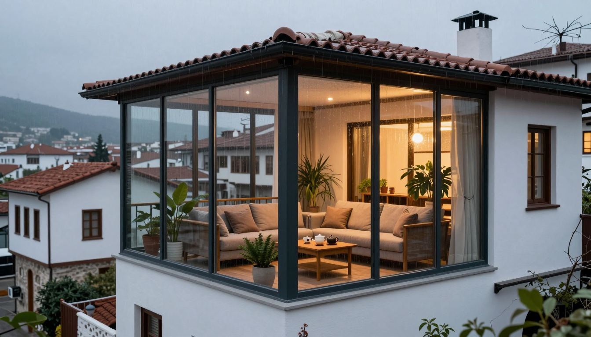
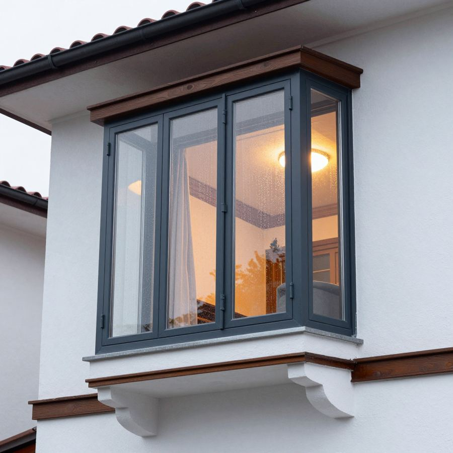
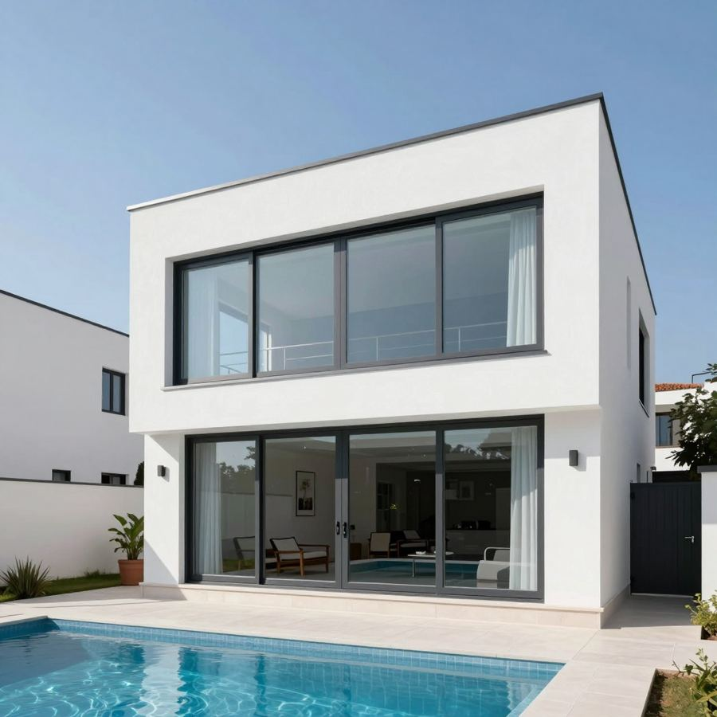
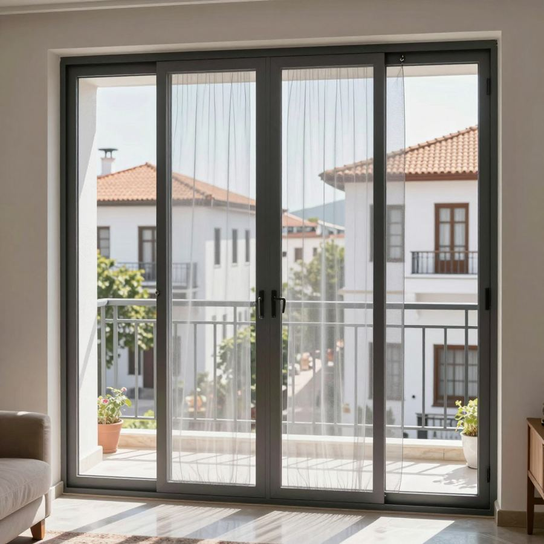
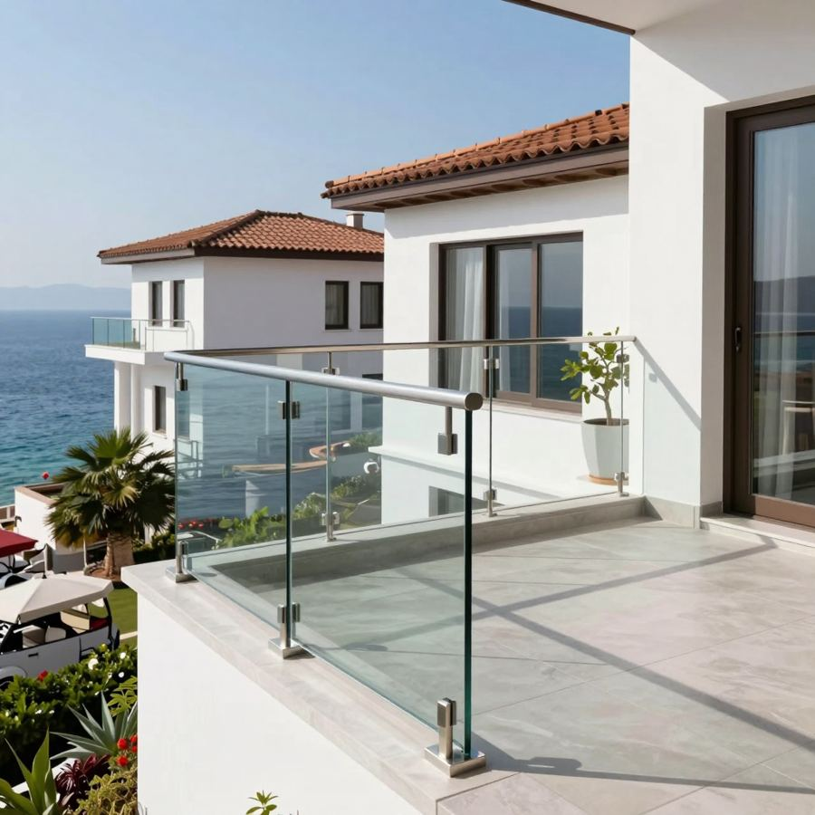

Balkonu evin en sevilen odası yapmak
Cam balkondan panjura, sineklikten tenteye kadar her şeyi ölçünüze göre üretip takıyoruz. Bu katalogda hangi sistemin size uyduğunu birlikte bulalım.

Cam balkon
Ege'de balkon yazın serinlemek, kışın da güneşi içeri almak için var. Doğru sistemi seçince balkon yılın on iki ayı kullanılıyor.

Katlanır ve sürme
Kanatlar bir kenara toplanır, balkon tamamen açılır. Yazın açık, rüzgârda ve yağmurda kapalı. En çok tercih edilen ve en ekonomik sistem.

Isıcamlı ve giyotin
Çift cam sayesinde kışın içerisi ısınır, balkon salonun devamı olur. Giyotin sistemde camlar yukarı aşağı hareket eder, rüzgâr alan yüksek katlar için uygundur.
Alüminyum ve PVC doğrama
Villa için ince profilli geniş alüminyum açıklıklar, daire için ısı ve ses yalıtımlı PVC pencereler.

Alüminyum
Dayanıklı, ince ve modern. Bahçe ve havuz tarafındaki geniş açıklıklarda manzarayı kapatmaz.
PVC
Eski pencereleri sökeriz, ısıcamlı PVC takarız. Faturaya ve sokak gürültüsüne fark edilir etkisi olur.
Gölge, güvenlik, rahatlık
Cam balkonu tamamlayan ürünler. Çoğu müşterimiz aynı keşifte birkaçını birlikte yaptırıyor.




Size hangisi uygun?
Sizin için önemli olanları işaretleyin. Önerimiz ve karşılaştırma tablosu buna göre değişir.
Sizin için önemli olanlar
| Katlanır | Sürme | Isıcamlı | Giyotin |
|---|
Ücretsiz keşif randevusu
Gün ve saat seçin. Talebiniz WhatsApp'tan Faruk Bey'e iletilir, size dönüş yapılır.
Keşif talebiniz
- Gün
- -
- Saat
- -
- Bölge
- -
- İş
- -
- Ad
- -
Keşif ücretsizdir ve sizi bağlamaz. Ölçü sonrası yazılı teklif verilir.
"Ölçüyü aldık, iki gün sonra balkonumuz kapalıydı. Kışın artık orada kahvaltı ediyoruz."
Örnek müşteri yorumu. Gerçek yorumlarınız Google'dan buraya otomatik gelecek.